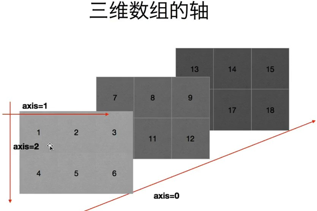

NumPy介绍
Numpy（Numerical Python）是一个开源的Python科学计算库，用于快速处理任意维度的数组。
Numpy支持常见的数组和矩阵操作。对于同样的数值计算任务，使用Numpy比直接使用Python要简洁的多。
Numpy使用ndarray对象来处理多维数组，该对象是一个快速而灵活的大数据容器。
NumPy优点
- 快速
- 方便
科学计算的基础库
对于同样的数值计算任务，使用NumPy要比直接编写Python代码便捷得多；
NumPy中的数组的存储效率和输入输出性能均远远优于Python中等价的基本数据结构，且其能够提升的性能是 与数组中的元素成比例的；
NumPy的大部分代码都是用C语言写的，其底层算法在设计时就有着优异的性能，这使得NumPy比纯Python代 码高效得多
安装
pip install numpy
与原生list运算效率对比
import random
import time
import numpy as np
a = []
for i in range(100000000):
a.append(random.random())
t1 = time.time()
sum1=sum(a)
t2=time.time()
b=np.array(a)
t4=time.time()
sum3=np.sum(b)
t5=time.time()
print(t2-t1, t5-t4)
45.5947265625 2.542968988418579
NumPy 的Ndarray 对象
NumPy 最重要的一个特点是其 N 维数组对象 ndarray，它是一系列同类型数据的集合，以 0 下标为开始进行集合中元素的索引。ndarray 对象是用于存放同类型元素的多维数组。
创建一维数组
多种样式创建一维数组
直接传入列表
import numpy as np
list=[1,2,3,4]
Array_1=np.array(list)
print(Array_1,type(Array_1))
[1 2 3 4] <class 'numpy.ndarray'>
传入range生成序列
Array_2=np.array(range(1,10))
print(Array_2,type(Array_2))
[1 2 3 4 5 6 7 8 9] <class 'numpy.ndarray'>
利用numpy自带的np.arange（）
Array_3=np.arange(1,10)
print(Array_3,type(Array_3))
[1 2 3 4 5 6 7 8 9] <class 'numpy.ndarray'>
创建二维数组
list2=[[1,2,3],[4,5,6],[7,8,9]]
t1=np.array(list2)
print(t1,type(t1))
[[1 2 3]
[4 5 6]
[7 8 9]] <class 'numpy.ndarray'>
常用属性
# 获取数组的维度（与函数的参数相似）
print(t1.ndim)
2
#形状(行，列)
print(t1.shape)
(3, 3)
#元素个数
print(t1.size)
9
调整数组的形状
t2= np.array([[1,2,3],[4,5,6]])
# 修改的是原有的four.shape = (3,2)
print(t2)
# 返回一个新的数组
t2 = t2.reshape(3,2)
print(t2)
# 将多维变成一维数组
t3= t2.reshape((6,),order='F')
# 默认情况下‘C’以行为主的顺序展开，‘F’（Fortran风格）意味着以列的顺序展开
t4 = t2.flatten(order='F')
print(t3)
print(t4)
[[1 2 3]
[4 5 6]]
[[1 2]
[3 4]
[5 6]]
[1 3 5 2 4 6]
[1 3 5 2 4 6]
# 拓展：数组的形状
t = np.arange(24)
print(t)
print(t.shape)
# 转换成二维
t1 = t.reshape((4,6))
print(t1)
print(t1.shape)
# 转成三维
t2 = t.reshape((2,3,4))
print(t2)
print(t2.shape)
[ 0 1 2 3 4 5 6 7 8 9 10 11 12 13 14 15 16 17 18 19 20 21 22 23]
(24,)
[[ 0 1 2 3 4 5]
[ 6 7 8 9 10 11]
[12 13 14 15 16 17]
[18 19 20 21 22 23]]
(4, 6)
[[[ 0 1 2 3]
[ 4 5 6 7]
[ 8 9 10 11]]
[[12 13 14 15]
[16 17 18 19]
[20 21 22 23]]]
(2, 3, 4)
将数组转成list
a= np.array([9, 12, 88, 14, 25])
list_a = a.tolist()
print(list_a)
print(type(list_a))
[9, 12, 88, 14, 25]
<class 'list'>
NumPy的数据类型
f = np.array([1,2,3,4,5], dtype = np.int16)
# 返回数组中每个元素的字节单位长度
print(f.itemsize) # 1 np.int8(一个字节)
2
# 获取数据类型
print(f.dtype)
int16
# 调整数据类型
f1 = f.astype(np.int64)
print(f1.dtype)
int64
# 拓展随机生成小数
# 使用python语法，保留两位
print(round(random.random(),2))
arr = np.array([random.random() for i in range(10)])
# 取小数点后两位
print(np.round(arr,2))
0.02
[0.29 0.82 0.01 0.23 0.89 0.46 0.44 0.4 0.58 0.17]
| 类型 |
说明 |
| bool |
用一个字节存储的布尔类型（True或False） |
| inti |
由所在平台决定其大小的整数（一般为int32或int64） |
| int8 |
一个字节大小，-128 至 127 |
| int16 |
整数，-32768 至 32767 |
| int32 |
整数，-2 ** 31 至 2 ** 32 -1 |
| int64 |
整数，-2 ** 63 至 2 ** 63 - 1 |
| uint8 |
无符号整数，0 至 255 |
| uint16 |
无符号整数，0 至 65535 |
| uint32 |
无符号整数，0 至 2 ** 32 - 1 |
| uint64 |
无符号整数，0 至 2 ** 64 - 1 |
| float16 |
半精度浮点数：16位，正负号1位，指数5位，精度10位 |
| float32 |
单精度浮点数：32位，正负号1位，指数8位，精度23位 |
| float64或float |
双精度浮点数：64位，正负号1位，指数11位，精度52位 |
| complex64 |
复数，分别用两个32位浮点数表示实部和虚部 |
| complex128或complex |
复数，分别用两个64位浮点数表示实部和虚部 |
数组的计算
数组和数的计算
由于numpy的广播机机制在运算过程中，加减乘除的值被广播到所有的元素上面。
t1 = np.arange(24).reshape((6,4))
print(t1+2)
print(t1*2)
print(t1/2)
[[ 2 3 4 5]
[ 6 7 8 9]
[10 11 12 13]
[14 15 16 17]
[18 19 20 21]
[22 23 24 25]]
[[ 0 2 4 6]
[ 8 10 12 14]
[16 18 20 22]
[24 26 28 30]
[32 34 36 38]
[40 42 44 46]]
[[ 0. 0.5 1. 1.5]
[ 2. 2.5 3. 3.5]
[ 4. 4.5 5. 5.5]
[ 6. 6.5 7. 7.5]
[ 8. 8.5 9. 9.5]
[10. 10.5 11. 11.5]]
数组与数组之间的操作
同种形状的数组(对应位置进行计算操作)
t1 = np.arange(24).reshape((6,4))
t2 = np.arange(100,124).reshape((6,4))
print(t1+t2)
print(t1*t2)
[[100 102 104 106]
[108 110 112 114]
[116 118 120 122]
[124 126 128 130]
[132 134 136 138]
[140 142 144 146]]
[[ 0 101 204 309]
[ 416 525 636 749]
[ 864 981 1100 1221]
[1344 1469 1596 1725]
[1856 1989 2124 2261]
[2400 2541 2684 2829]]
不种形状的多维数组不能计算
t1 = np.arange(24).reshape((4,6))
t2 = np.arange(18).reshape((3,6))
print(t1)
print(t2)
print(t1-t2)
[[ 0 1 2 3 4 5]
[ 6 7 8 9 10 11]
[12 13 14 15 16 17]
[18 19 20 21 22 23]]
[[ 0 1 2 3 4 5]
[ 6 7 8 9 10 11]
[12 13 14 15 16 17]]
---------------------------------------------------------------------------
ValueError Traceback (most recent call last)
<ipython-input-32-8e6819c2b1e3> in <module>()
3 print(t1)
4 print(t2)
----> 5 print(t1-t2)
ValueError: operands could not be broadcast together with shapes (4,6) (3,6)
行数或者列数相同的一维数组和多维数组可以进行计算：
行形状相同（会与每一行数组的对应位相操作)
t1 = np.arange(24).reshape((4,6))
t2 = np.arange(0,6)
print(t1-t2)
[[ 0 0 0 0 0 0]
[ 6 6 6 6 6 6]
[12 12 12 12 12 12]
[18 18 18 18 18 18]]
列形状相同（会与每一个相同维度的数组的对应位相操作)
t1 = np.arange(24).reshape((4,6))
t2 = np.arange(4).reshape((4,1))
print(t1-t2)
[[ 0 1 2 3 4 5]
[ 5 6 7 8 9 10]
[10 11 12 13 14 15]
[15 16 17 18 19 20]]
数组中的轴
什么是轴： 在numpy中可以理解为方向，使用0，1，2数字表示，对于一个一维数组，只有一个0轴， 对于2维数组（shape（2，2))有0轴和1轴， 对于3维数组（shape（2，2，3））有0，1，2轴
为什么要学习轴：有了轴的概念后，我们计算会更加方便，比如计算一个2维数组的平均值，必须指定是计算哪个方向上面的数字的平均值。


import numpy as np
a = np.array([[1,2,3],[4,5,6]])
print(np.sum(a,axis=0)) # [5 7 9]
print(np.sum(a,axis = 1)) # [ 6 15]
print(np.sum(a))# 计算所有的值的和
[5 7 9]
[ 6 15]
21
#三维的数据
a = np.arange(27).reshape((3,3,3))
print(a)
[[[ 0 1 2]
[ 3 4 5]
[ 6 7 8]]
[[ 9 10 11]
[12 13 14]
[15 16 17]]
[[18 19 20]
[21 22 23]
[24 25 26]]]
b = np.sum(a, axis=0)
print(b)
[[27 30 33]
[36 39 42]
[45 48 51]]
c = np.sum(a, axis=1)
print(c)
[[ 9 12 15]
[36 39 42]
[63 66 69]]
c = np.sum(a, axis=2)
print(c)
[[ 3 12 21]
[30 39 48]
[57 66 75]]
总结：在计算的时候可以想象成是每一个坐标轴，分别计算这个轴上面的每一个刻度上的值，或者在二维数组中记住0表示列1表示行.
数组的索引和切片
一维数组的操作方法
import numpy as np
a = np.arange(10)
# 冒号分隔切片参数 start:stop:step 来进行切片操作
print(a[2:7:2])# 从索引 2 开始到索引 7 停止，间隔为 2
# 如果只放置一个参数，如 [2]，将返回与该索引相对应的单个元素
print(a[2],a)
# 如果为 [2:]，表示从该索引开始以后的所有项都将被提取
print(a[2:])
[2 4 6]
2 [0 1 2 3 4 5 6 7 8 9]
[2 3 4 5 6 7 8 9]
多维数组的操作方法
import numpy as np
t1 = np.arange(24).reshape(4,6)
print(t1)
print('*'*20)
print(t1[1]) # 取一行(一行代表是一条数据，索引也是从0开始的)
print(t1[1,:]) # 取一行
print(t1[1:])# 取连续的多行
print(t1[1:3,:])# 取连续的多行
print(t1[[0,2,3]])# 取不连续的多行
print(t1[[0,2,3],:])# 取不连续的多行
print(t1[:,1])# 取一列
print(t1[:,1:])# 连续的多列
print(t1[:,[0,2,3]])# 取不连续的多列
print(t1[2,3])# # 取某一个值,三行四列
print(t1[[0,1,1],[0,1,3]])# 取多个不连续的值，[[行，行。。。],[列，列。。。]]
[[ 0 1 2 3 4 5]
[ 6 7 8 9 10 11]
[12 13 14 15 16 17]
[18 19 20 21 22 23]]
********************
[ 6 7 8 9 10 11]
[ 6 7 8 9 10 11]
[[ 6 7 8 9 10 11]
[12 13 14 15 16 17]
[18 19 20 21 22 23]]
[[ 6 7 8 9 10 11]
[12 13 14 15 16 17]]
[[ 0 1 2 3 4 5]
[12 13 14 15 16 17]
[18 19 20 21 22 23]]
[[ 0 1 2 3 4 5]
[12 13 14 15 16 17]
[18 19 20 21 22 23]]
[ 1 7 13 19]
[[ 1 2 3 4 5]
[ 7 8 9 10 11]
[13 14 15 16 17]
[19 20 21 22 23]]
[[ 0 2 3]
[ 6 8 9]
[12 14 15]
[18 20 21]]
15
[0 7 9]
组中的数值修改
t = np.arange(24).reshape(4,6)
# 修改某一行的值
t[1,:]=0
# 修改某一列的值
t[:,1]=0
# 修改连续多行
t[1:3,:]=0
# 修改连续多列
t[:,1:4]=0
# 修改多行多列，取第二行到第四行，第三列到第五列
t[1:4,2:5]=0
# 修改多个不相邻的点
t[[0,1],[0,3]]=0
# 可以根据条件修改，比如讲小于10的值改掉
t[t<10]=0
# 使用逻辑判断
# np.logical_and &
# np.logical_or |
# np.logical_not ~
t[(t>2)&(t<6)]=0 # 与
t[(t<2)|(t>6)]=0 # 或
t[~(t>6)]=0 # 非
print(t)
# 拓 展
# 三目运算（ np.where(condition, x, y)满足条件(condition)，输出x，不满足输出y。)）
# score = np.array([[80,88],[82,81],[75,81]])
# result = np.where(score>80,True,False)
# print(result)
[[0 0 0 0 0 0]
[0 0 0 0 0 0]
[0 0 0 0 0 0]
[0 0 0 0 0 0]]
数组的添加、删除和去重
数组的添加
- numpy.append 函数在数组的末尾添加值。 追加操作会分配整个数组，并把原来的数组复制到新数组中。 此外，输入数组的维度必须匹配否则将生成ValueError。
参数说明：
- arr：输入数组
- values：要向arr添加的值，需要和arr形状相同（除了要添加的轴）
- axis：默认为 None。当axis无定义时，是横向加成，返回总是为一维数组！当axis有定义的时候，分别为0和1的时候。当
- axis有定义的时候，分别为0和1的时候（列数要相同）。当axis为1时，数组是加在右边（行数要相同）。
a = np.array([[1,2,3],[4,5,6]])
print ('第一个数组：')
print (a)
print ('\n')
print (' 向 数 组 添 加 元 素 ：')
print (np.append(a, [7,8,9]))
print ('\n')
print ('沿轴 0 添加元素：')
print (np.append(a, [[7,8,9]],axis = 0))
print ('\n')
print ('沿轴 1 添加元素：')
print (np.append(a, [[5,5,5],[7,8,9]],axis = 1))
第一个数组：
[[1 2 3]
[4 5 6]]
向 数 组 添 加 元 素 ：
[1 2 3 4 5 6 7 8 9]
沿轴 0 添加元素：
[[1 2 3]
[4 5 6]
[7 8 9]]
沿轴 1 添加元素：
[[1 2 3 5 5 5]
[4 5 6 7 8 9]]
numpy.insert 函数在给定索引之前，沿给定轴在输入数组中插入值。
如果值的类型转换为要插入，则它与输入数组不同。 插入没有原地的，函数会返回一个新数组。 此外，如果未提供轴，则输入数组会被展开。
a = np.array([[1,2],[3,4],[5,6]])
print ('第一个数组：')
print (a)
print ('\n')
print ('未传递 Axis 参数。 在插入之前输入数组会被展开。')
print (np.insert(a,3,[11,12]))
print ('\n')
print ('传递了 Axis 参数。 会广播值数组来配输入数组。')
print ('沿轴 0 广播：')
print (np.insert(a,1,[11],axis = 0))
print ('\n')
print ('沿轴 1 广播：')
print (np.insert(a,1,11,axis = 1))
第一个数组：
[[1 2]
[3 4]
[5 6]]
未传递 Axis 参数。 在插入之前输入数组会被展开。
[ 1 2 3 11 12 4 5 6]
传递了 Axis 参数。 会广播值数组来配输入数组。
沿轴 0 广播：
[[ 1 2]
[11 11]
[ 3 4]
[ 5 6]]
沿轴 1 广播：
[[ 1 11 2]
[ 3 11 4]
[ 5 11 6]]
数组中的删除
numpy.delete 函数返回从输入数组中删除指定子数组的新数组。 与 insert() 函数的情况一样，如果未提供轴参数， 则输入数组将展开。
参数说明：
a = np.arange(12).reshape(3,4)
print ('第一个数组：')
print (a)
print ('\n')
print ('未传递 Axis 参数。 在删除之前输入数组会被展开。')
print (np.delete(a,5))
print ('\n')
print ('删除每一行中的第二列：')
print (np.delete(a,1,axis = 1))
print ('\n')
第一个数组：
[[ 0 1 2 3]
[ 4 5 6 7]
[ 8 9 10 11]]
未传递 Axis 参数。 在删除之前输入数组会被展开。
[ 0 1 2 3 4 6 7 8 9 10 11]
删除每一行中的第二列：
[[ 0 2 3]
[ 4 6 7]
[ 8 10 11]]
数组去重
numpy.unique 函数用于去除数组中的重复元素。
- arr：输入数组 ，如果不是一维数组则会展开 * return_index：如果为true，返回新列表元素在旧列表中的位置（下标），并以列表形式储
- return_inverse：如果为true，返回旧列表元素在新列表中的位置（下标），并以列表形式储
- return_counts：如果为true，返回去重数组中的元素在原数组中的出现次数
a = np.array([5,2,6,2,7,5,6,8,2,9])
print ('第一个数组：')
print (a)
print ('\n')
print ('第一个数组的去重值：')
u = np.unique(a)
print (u)
print ('\n')
print ('去重数组的索引数组：')
u,indices = np.unique(a, return_index = True)
print (indices)
print ('\n')
print ('我们可以看到每个和原数组下标对应的数值：')
print (a)
print ('\n')
print ('去重数组的下标：')
u,indices = np.unique(a,return_inverse = True)
print (u)
print (indices)
print ('\n')
print ('返回去重元素的重复数量：')
u,indices = np.unique(a,return_counts = True) # print (u)
print (indices)
第一个数组：
[5 2 6 2 7 5 6 8 2 9]
第一个数组的去重值：
[2 5 6 7 8 9]
去重数组的索引数组：
[1 0 2 4 7 9]
我们可以看到每个和原数组下标对应的数值：
[5 2 6 2 7 5 6 8 2 9]
去重数组的下标：
[2 5 6 7 8 9]
[1 0 2 0 3 1 2 4 0 5]
返回去重元素的重复数量：
[3 2 2 1 1 1]
numpy的计算
score = np.array([[80,88],[82,81],[75,81]])
print(score)
[[80 88]
[82 81]
[75 81]]
获取所有数据最大值
print(np.max(score))
88
获取某个轴上的数据最大值
print(np.max(score,axis=0))
[82 88]
获取最小值
print(np.min(score))
75
获取某个轴上最小值
print(np.min(score,axis=0))
[75 81]
数据的比较
t1=[1,2,3,4,5,6,7,8]
print(t1)
[1, 2, 3, 4, 5, 6, 7, 8]
print(np.maximum(t1,0)) # 第一个参数中的每一个数与第二个参数比较返回大的
[1 2 3 4 5 6 7 8]
print(np.minimum(t1,0))# 第一个参数中的每一个数与第二个参数比较返回小的
[0 0 0 0 0 0 0 0]
# 接受的两个参数，也可以大小一致;第二个参数只是一个单独的值时，其实是用到了维度的广播机制
print(np.maximum(t1,[2,4,6,8,9,1,3,5]))
[2 4 6 8 9 6 7 8]
求平均值
print(np.mean(t1))# 获取所有数据的平均值
4.5
print(np.mean(score,axis=0))
[79. 83.33333333]
求前缀和
arr = np.array([[1,2,3], [4,5,6]])
print(arr)
print('*'*20)
print('''
[1, 2, 3]------> | 1 | 2 | 3 |
[4, 5, 6]------> |5=1+4 |7=2+5 |9=3+6| ''')
print('*'*20)
print(arr.cumsum(0))
[[1 2 3]
[4 5 6]]
********************
[1, 2, 3]------> | 1 | 2 | 3 |
[4, 5, 6]------> |5=1+4 |7=2+5 |9=3+6|
********************
[[1 2 3]
[5 7 9]]
print('''
[1, 2, 3]------> |1 |2+1 |3+2+1 |
[4, 5, 6]------> |4 |4+5 |4+5+6 | ''')
print('*'*20)
print(arr.cumsum(1))
[1, 2, 3]------> |1 |2+1 |3+2+1 |
[4, 5, 6]------> |4 |4+5 |4+5+6 |
********************
[[ 1 3 6]
[ 4 9 15]]
求最小索引值
print(np.argmin(score,axis=0))
[2 1]
求每一列的标准差
标准差是一组数据平均值分散程度的一种度量。一个较大的标准差，代表大部分数值和其平均值之间差异较大；
一个较小的标准差，代表这些数据较接近平均值反应出数据的波动稳定情况，越大表示波动越大，越不稳定。
print(np.std(score,axis=0))
[2.94392029 3.29983165]
极 值
np.ptp(score,axis=None)# 就是最大值和最小值的差
13
拓展
- 方差var
- 协方差cov
- 计算平均值 average
- 计算中位数 median
通用函数
| 函数 |
介绍 |
| numpy.sqrt(array) |
平方根函数 |
| numpy.exp(array) |
earray[i]的数组 |
| numpy.abs/fabs(array) |
计算绝对值 |
| numpy.square(array) |
计算各元素的平方 等于array**2 |
| numpy.log/log10/log2(array) |
计算各元素的各种对数 |
| numpy.sign(array) |
计算各元素正负号 |
| numpy.isnan(array) |
计算各元素是否为NaN |
| numpy.isinf(array) |
计算各元素是否为NaN |
| numpy.cos/cosh/sin/sinh/tan/tanh(array) |
三角函数 |
| numpy.modf(array) |
将array中值得整数和小数分离，作两个数组返回 |
| numpy.ceil(array) |
向上取整,也就是取比这个数大的整数 |
| numpy.floor(array) |
向下取整,也就是取比这个数小的整数 |
| numpy.rint(array) |
四舍五入 |
| numpy.trunc(array) |
向0取整 |
| numpy.cos(array) |
正弦值 |
| numpy.sin(array) |
余弦值 |
| numpy.tan(array) |
正切值 |
| numpy.add(array1,array2) |
元素级加法 |
| numpy.subtract(array1,array2) |
元素级减法 |
| numpy.multiply(array1,array2) |
元素级乘法 |
| numpy.divide(array1,array2) |
元素级除法 array1./array2 |
| numpy.power(array1,array2) |
元素级指数 array1.array2 |
| numpy.maximum/minimum(array1,aray2) |
元素级最大值 |
| numpy.fmax/fmin(array1,array2) |
元素级最大值，忽略NaN |
| numpy.mod(array1,array2) |
元素级求模 |
| numpy.copysign(array1,array2) |
将第二个数组中值得符号复制给第一个数组中值 |
| numpy.greater/greater_equal/less/less_equal/equal/not_equal (array1,array2) |
元素级比较运算，产生布尔数组 |
| numpy.logical_end/logical_or/logic_xor(array1,array2) |
元素级的真值逻辑运算 |
数组的拼接
有的时候我们需要将两个数据加起来一起研究分析，我们就可以将其进行拼接然后分析
根据轴连接的数组序列
a = np.array([[1,2],[3,4]])
b = np.array([[5,6],[7,8]])
#要求a,b两个数组的维度相同
print ('沿轴 0 连接两个数组：')
print (np.concatenate((a,b),axis= 0))
print ('\n')
print ('沿轴 1 连接两个数组：')
print (np.concatenate((a,b),axis = 1))
沿轴 0 连接两个数组：
[[1 2]
[3 4]
[5 6]
[7 8]]
沿轴 1 连接两个数组：
[[1 2 5 6]
[3 4 7 8]]
根据轴进行堆叠
print ('沿轴 0 连接两个数组：')
print (np.stack((a,b),axis= 0))
print ('\n')
print ('沿轴 1 连接两个数组：')
print (np.stack((a,b),axis = 1))
沿轴 0 连接两个数组：
[[[1 2]
[3 4]]
[[5 6]
[7 8]]]
沿轴 1 连接两个数组：
[[[1 2]
[5 6]]
[[3 4]
[7 8]]]
矩阵垂直拼接
v1 = [[0,1,2,3,4,5],
[6,7,8,9,10,11]]
v2 = [[12,13,14,15,16,17],
[18,19,20,21,22,23]]
result = np.vstack((v1,v2))
print(result)
[[ 0 1 2 3 4 5]
[ 6 7 8 9 10 11]
[12 13 14 15 16 17]
[18 19 20 21 22 23]]
矩阵水平拼接
result = np.hstack((v1,v2))
print(result)
[[ 0 1 2 3 4 5 12 13 14 15 16 17]
[ 6 7 8 9 10 11 18 19 20 21 22 23]]
数组的分割
将一个数组分割为多个子数组
参数说明：
- ary： 被分割的数组
- indices_or_sections：果是一个整数，就用该数平均切分，如果是一个数组，为沿轴切分的位置（左开右闭）
- axis：沿着哪个维度进行切向，默认为0，横向切分。为1时，纵向切分
arr = np.arange(9).reshape(3,3)
print ('将数组分为三个大小相等的子数组：')
b= np.split(arr,3)
print (b)
将数组分为三个大小相等的子数组：
[array([[0, 1, 2]]), array([[3, 4, 5]]), array([[6, 7, 8]])]
numpy.hsplit 函数用于水平分割数组，通过指定要返回的相同形状的数组数量来拆分原数组。
harr = np.floor(10 * np.random.random((2, 6))) #
print ('原array：')
print(harr)
print ('拆分后：')
print(np.hsplit(harr, 3))
原array：
[[6. 9. 3. 6. 1. 1.]
[8. 3. 1. 7. 4. 5.]]
拆分后：
[array([[6., 9.],
[8., 3.]]), array([[3., 6.],
[1., 7.]]), array([[1., 1.],
[4., 5.]])]
numpy.vsplit
沿着垂直轴分割
a = np.arange(16).reshape(4,4)
print ('第一个数组：')
print (a)
print ('\n')
print ('竖直分割：')
b = np.vsplit(a,2)
print (b)
第一个数组：
[[ 0 1 2 3]
[ 4 5 6 7]
[ 8 9 10 11]
[12 13 14 15]]
竖直分割：
[array([[0, 1, 2, 3],
[4, 5, 6, 7]]), array([[ 8, 9, 10, 11],
[12, 13, 14, 15]])]
数组中nan和inf
C 语言中表示最大的正整数值是 0x7FFF FFFF，最小的负整数是 0x8000 0000。
查阅资料后，发现 inf 表示无穷大，需要使用 float(‘inf’) 函数来转化，那么对应的就有 float('-inf') 表示无穷小了。这样你就可以使用任意数来判断和它的关系了。
那什么时候会出现inf呢？ 比如一个数字除以0，Python中会报错，但是numpy中会是一个inf或者-inf
另外还有 nan，这种写法在 pandans 中常见，表示缺失的数据，所以一般用 nan 来表示。任何与其做运算结果都是 nan
# 创建一个nan和inf
a = np.nan
b = np.inf
print(a,type(a))
print(b,type(b))
#--判断数组中为nan的个数
t = np.arange(24,dtype=float).reshape(4,6)
#将三行四列的数改成nan
t[3,4] = np.nan
#可以使用np.count_nonzero() 来判断非零的个数
print(np.count_nonzero(t))
#并 且 np.nan != np.nan 结果 是TRUE
#所以我们可以使用这两个结合使用判断nan的个数
print(np.count_nonzero(t != t))
#将nan替换为0
t[np.isnan(t)] = 0
print(t)
nan <class 'float'>
inf <class 'float'>
23
1
[[ 0. 1. 2. 3. 4. 5.]
[ 6. 7. 8. 9. 10. 11.]
[12. 13. 14. 15. 16. 17.]
[18. 19. 20. 21. 0. 23.]]
#----------练习： 处理数组中nan
t = np.arange(24).reshape(4,6).astype('float')
#将数组中的一部分替换nan
t[1,3:] = np.nan
print(t)
#遍历每一列，然后判断每一列是否有nan
for i in range(t.shape[1]):
# #获取当前列数据
temp_col = t[:,i]
#
# 判断当前列的数据中是否含有nan
nan_num = np.count_nonzero(temp_col != temp_col)
#
if nan_num != 0: #条件成立说明含有nan
# 将这一列不为nan的数据拿出来
temp_col_not_nan = temp_col[temp_col==temp_col]
# 将nan替换成这一列的平均值
temp_col[np.isnan(temp_col)] = np.mean(temp_col_not_nan)
print(t)
[[ 0. 1. 2. 3. 4. 5.]
[ 6. 7. 8. nan nan nan]
[12. 13. 14. 15. 16. 17.]
[18. 19. 20. 21. 22. 23.]]
[[ 0. 1. 2. 3. 4. 5.]
[ 6. 7. 8. 13. 14. 15.]
[12. 13. 14. 15. 16. 17.]
[18. 19. 20. 21. 22. 23.]]
二维数组的转置
#对换数组的维度
a = np.arange(12).reshape(3,4)
print ('原数组：')
print (a )
print ('\n')
print ('对换数组：')
print (np.transpose(a))
# 与transpose一致
a = np.arange(12).reshape(3,4)
print ('原数组：')
print (a)
print ('\n')
print ('转置数组：')
print (a.T)
# 函数用于交换数组的两个轴
t1 = np.arange(24).reshape(4,6)
re = t1.swapaxes(1,0)
print (' 原 数 组 ：')
print (t1)
print ('\n')
print ('调用 swapaxes 函数后的数组：')
print (re)
原数组：
[[ 0 1 2 3]
[ 4 5 6 7]
[ 8 9 10 11]]
对换数组：
[[ 0 4 8]
[ 1 5 9]
[ 2 6 10]
[ 3 7 11]]
原数组：
[[ 0 1 2 3]
[ 4 5 6 7]
[ 8 9 10 11]]
转置数组：
[[ 0 4 8]
[ 1 5 9]
[ 2 6 10]
[ 3 7 11]]
原 数 组 ：
[[ 0 1 2 3 4 5]
[ 6 7 8 9 10 11]
[12 13 14 15 16 17]
[18 19 20 21 22 23]]
调用 swapaxes 函数后的数组：
[[ 0 6 12 18]
[ 1 7 13 19]
[ 2 8 14 20]
[ 3 9 15 21]
[ 4 10 16 22]
[ 5 11 17 23]]